Frontend
Interfaces web modernas
Promedio del área
0%
Hola, soy
Estudiante de Ingeniería de Sistemas con orientación en desarrollo Full Stack e Inteligencia Artificial aplicada. He participado en proyectos académicos y profesionales enfocados en optimizar procesos, automatizar operaciones y construir soluciones digitales escalables. Destaco por mi pensamiento analítico, aprendizaje continuo y capacidad para adaptarme a entornos de alta exigencia.
Apasionado por transformar necesidades reales en productos tecnológicos de alto impacto, integrando ingeniería de software, analítica de datos y modelos de Inteligencia Artificial.
Cuento con experiencia en arquitectura y desarrollo de aplicaciones Full Stack, gestión de bases de datos y automatización con Python. También he implementado soluciones con modelos de IA y flujos inteligentes orientados a mejorar la toma de decisiones. Mi objetivo es aportar valor en equipos multidisciplinarios, diseñando sistemas robustos, mantenibles y alineados con objetivos de negocio.
Principales habilidades y tecnologías con las que trabajo en mis proyectos
Interfaces web modernas
Modelado y rendimiento SQL
APIs, lógica y arquitectura
Modelos, agentes y automatización
Infraestructura y colaboración
Desarrollo de interfaces responsivas, componentes reutilizables y experiencia de usuario.
Diseño de esquemas, optimización de consultas y mantenimiento de información crítica.
Construcción de APIs y lógica de negocio enfocada en rendimiento y escalabilidad.
Desarrollo de soluciones inteligentes con modelos generativos, agentes y análisis predictivo.
Herramientas clave para despliegue, entornos de desarrollo y trabajo colaborativo.
Educación académica, certificaciones y cursos complementarios de Kevin Alexis Mujica Laime.
Colaboración académica con Harvard University.
Actualmente cursando el séptimo semestre.
Graduado con formación humanística.
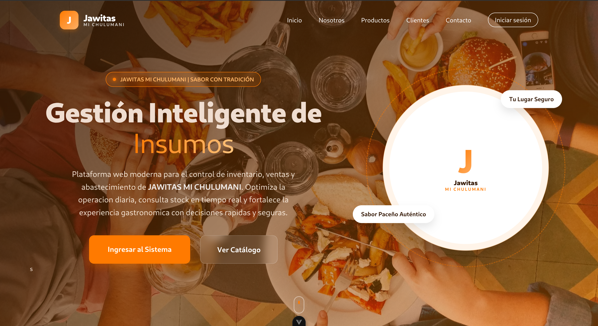
Sistema de Gestión Integral y Asistencia Gerencial
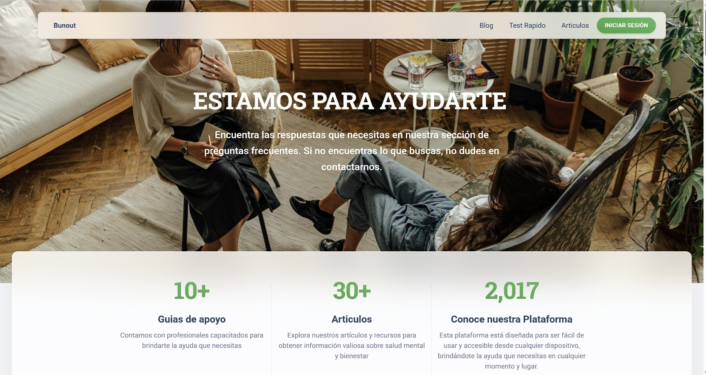
Predicción Temprana del Síndrome de Burnout
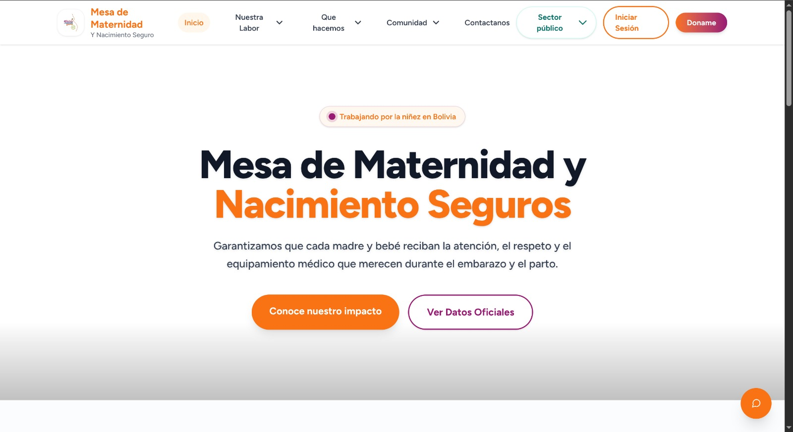
Portal Institucional de Nacimiento Seguro
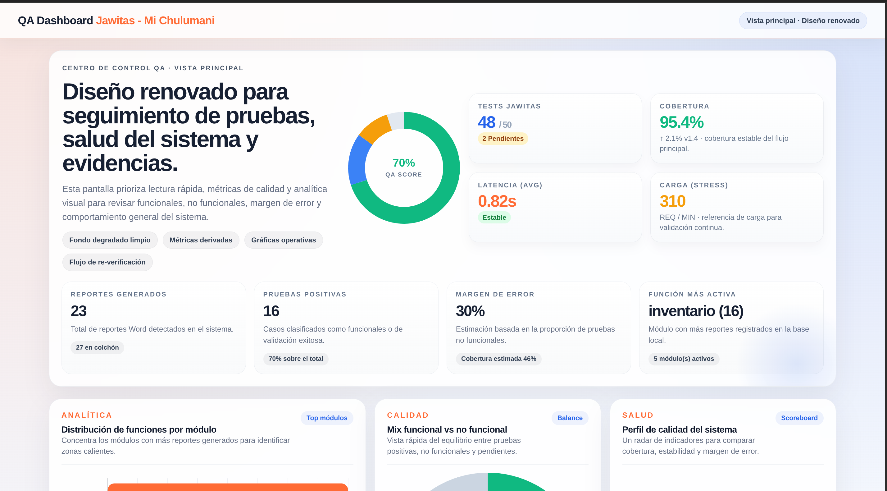
Automatización de Pruebas de Software
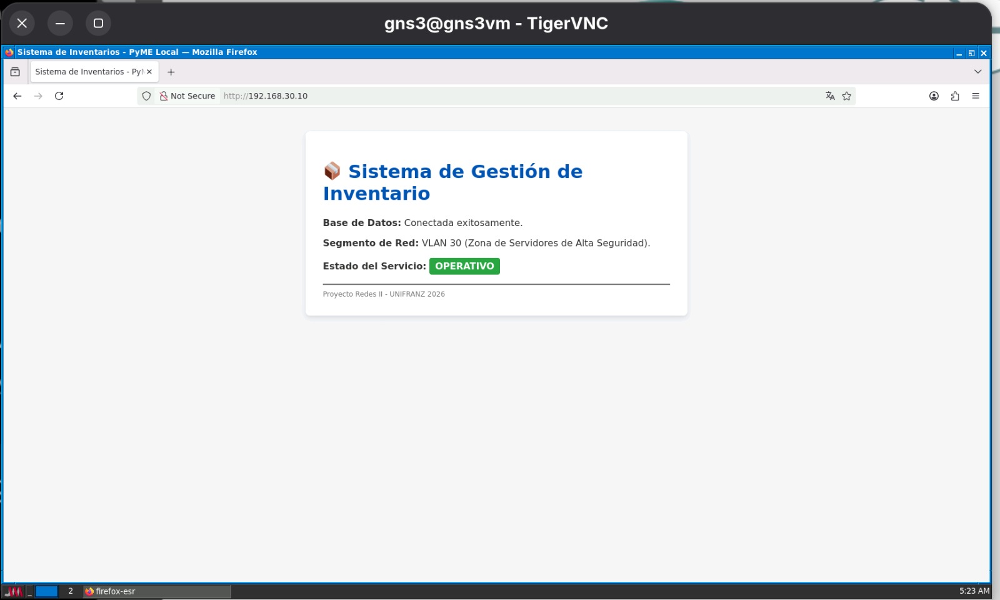
Infraestructura, Seguridad y Automatización
Plataforma web empresarial para administración y automatización de sucursales, optimizando logística, inventarios y toma de decisiones mediante agentes autónomos coordinados.
Organización: Jawitas "Mi Chulumani" (Proyecto de Grado para Ingeniería de Sistemas).
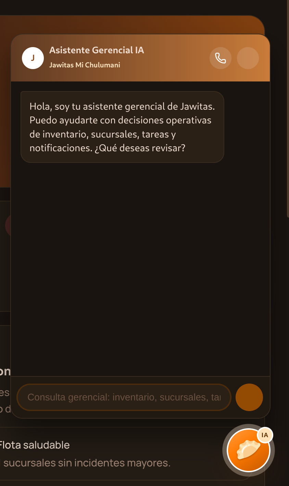
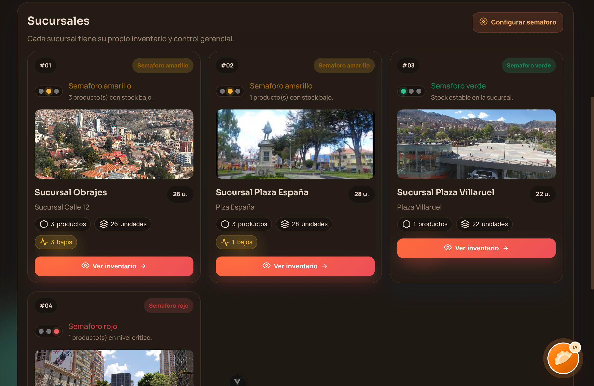
Plataforma médica y psicológica para monitoreo continuo, prevención y detección oportuna del desgaste profesional en internos de medicina.
Organización: Proyecto interdisciplinario con Medicina e Ingeniería de Sistemas de UNIFRANZ.
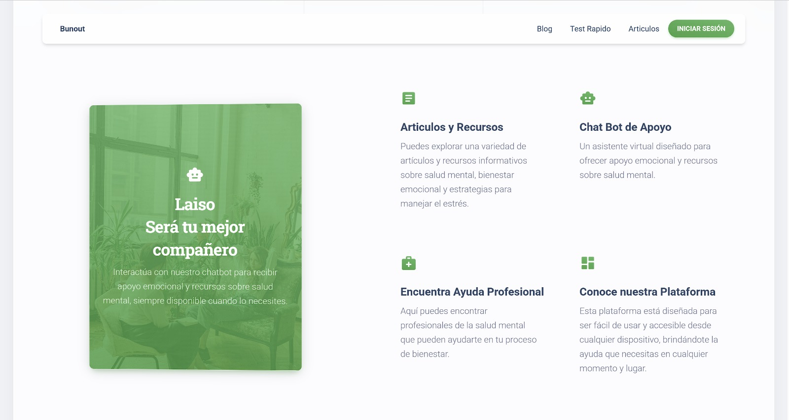
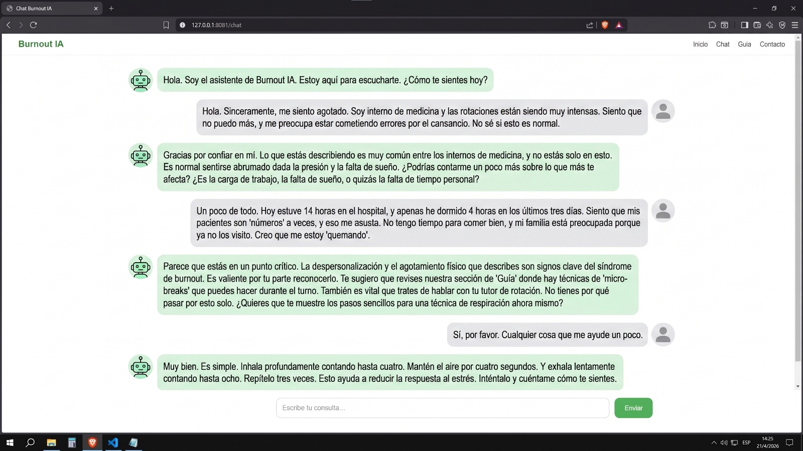
Portal web institucional enfocado en difusión científica, noticias de salud materna y acceso a información sobre parto institucional seguro en Bolivia.
Organización: UNICEF Bolivia.
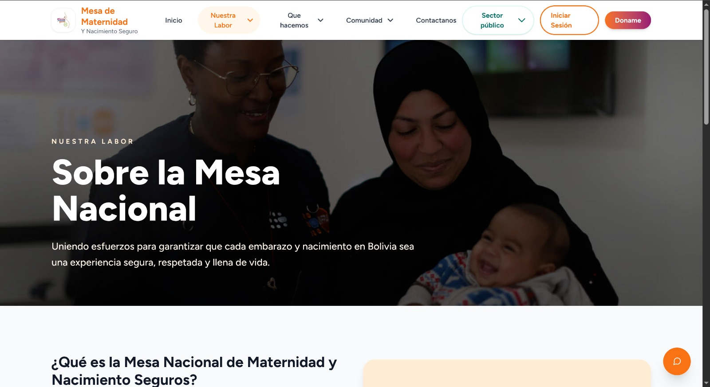
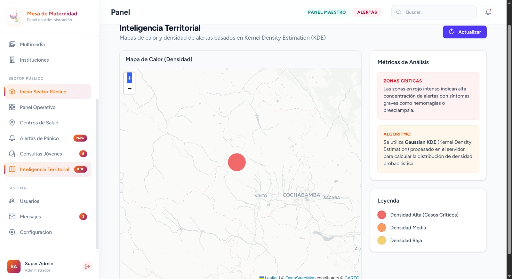
Suite técnica especializada en SQA para ejecución automática de pruebas y evaluación de carga y estrés sobre plataformas web.
Organización: Facultad de Ingeniería (UNIFRANZ).
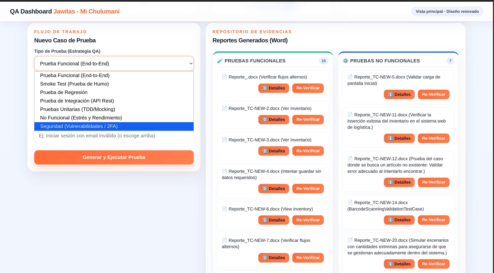
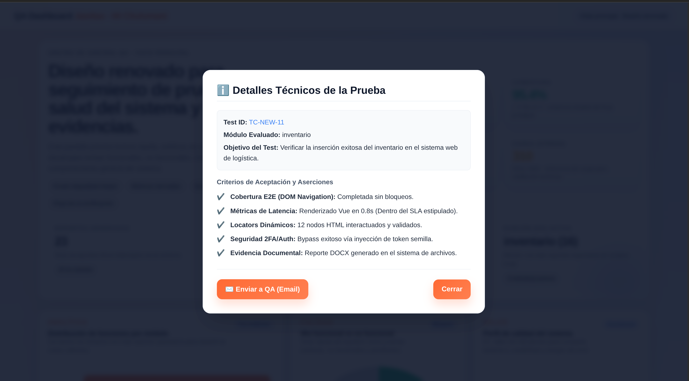
Implementación, seguridad y puesta en marcha de un servidor Linux en CentOS para simular infraestructura empresarial de red y servicios web.
Organización: Facultad de Ingeniería (Laboratorio de Sistemas de Redes).
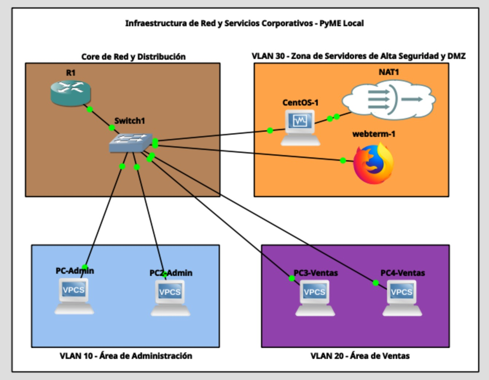